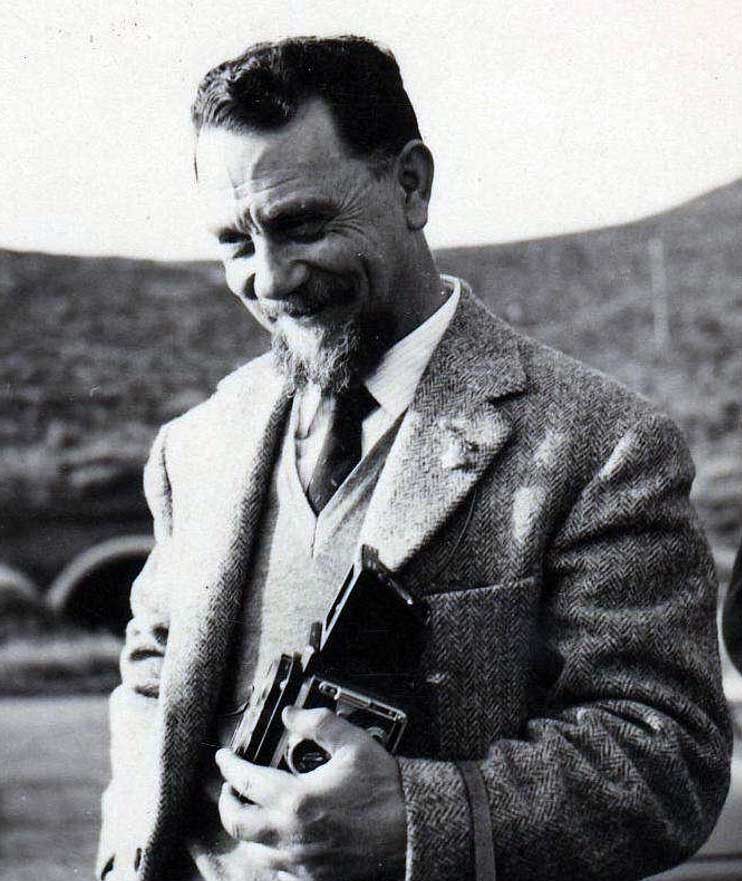

Antonio Lazzari
 Licenza
Licenza

Antonio Lazzari (Castro, 5 agosto 1905 – Napoli, 20 luglio 1979) è stato membro dell' Accademia Pontaniana, della Società geologica italiana e della Società dei Naturalisti.Allievo di Giuseppe De Lorenzo, dopo una carriera alla direzione dell'Agip e una esperienza in Albania, preferisce insegnare Geologia e poi Geografia Fisica all'Università di Napoli, eseguendo varie rilievi geologici come consulente dello stesso Agip.